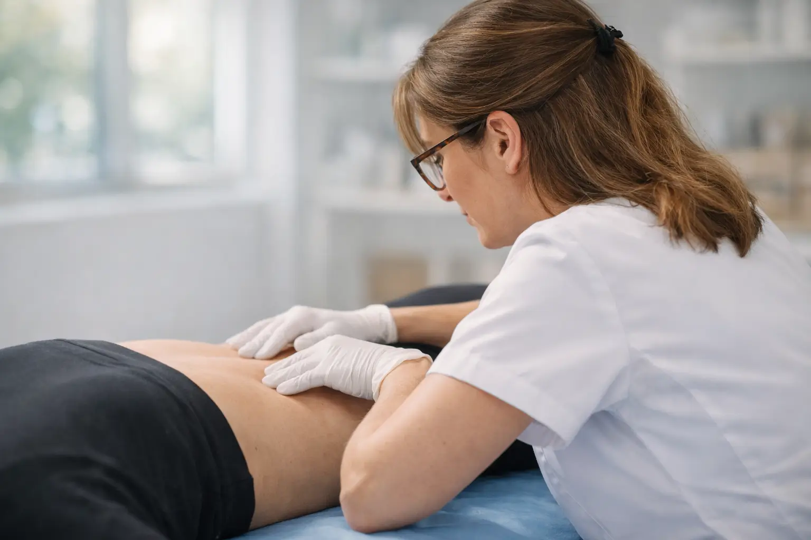

Primera consulta con diagnóstico postural completo
+500Pacientes atendidos
10+Años de experiencia
5.0⭐Google Maps

Sobre Mí
Lic. María Belén Basso Kinesióloga Fisiatra
Especializada en Reeducación Postural Global (RPG)
con método Tres Escuadras.
Durante más de 10 años ayudé a cientos de pacientes en Rosario
a recuperar su postura, eliminar dolores crónicos y mejorar su
calidad de vida mediante un abordaje integral que combina:
RPG (Reeducación Postural Global) - Método Tres Escuadras
Terapia Manual especializada
Acupuntura y Cupping terapéutico
Entrenamiento Funcional adaptado
Lic. en Kinesiología y FisiatríaUniversidad Nacional de Rosario
Especialización RPGMétodo Tres Escuadras certificado
Mi enfoque: Tratamiento personalizado basado en evidencia científica,
diagnóstico detallado y seguimiento constante de resultados.
"Cada paciente es único. Cada tratamiento también."
Servicios
Tratamientos Especializados
Soluciones integrales para recuperar tu postura y eliminar el dolor
RPG - Tres Escuadras
Método terapéutico global que corrige la postura mediante estiramientos
específicos, eliminando compensaciones musculares.
Tratamiento personalizado según patrón postural
Sesiones individuales de 50 minutos
Ideal para escoliosis, cifosis, hiperlordosis
Terapia Manual
Técnicas manuales para liberar tensiones, mejorar movilidad
articular y reducir contracturas musculares.
Liberación miofascial profunda
Movilizaciones articulares específicas
Tratamiento de puntos gatillo
Acupuntura y Cupping
Medicina tradicional china aplicada al tratamiento del dolor
y desequilibrios posturales.
Acupuntura para dolor crónico
Cupping (ventosas) para contracturas profundas
Complemento ideal con RPG
Entrenamiento Funcional
Ejercicios terapéuticos personalizados para fortalecer,
estabilizar y prevenir lesiones.
Programa individualizado según patología
Fortalecimiento del core y estabilizadores
Prevención de recaídas
HIIT Terapéutico
Entrenamiento de alta intensidad adaptado a objetivos terapéuticos
para recuperación funcional.
RPG es un método terapéutico que corrige la postura de forma global mediante
posturas de estiramiento específicas. Tratamos la causa del problema, no solo el síntoma.
Cada sesión es personalizada según tu patrón postural y tus necesidades específicas.
¿Cuántas sesiones necesito para ver resultados?
Depende de cada caso, pero la mayoría de los pacientes nota mejoras desde
la primera sesión. Un tratamiento completo suele requerir entre 10-15 sesiones
para obtener cambios posturales duraderos. El seguimiento es semanal inicialmente.
¿Atienden con obra social?
Sí, trabajamos con las principales obras sociales y prepagas de Rosario.
Consultá disponibilidad para tu cobertura específica. También ofrecemos
opciones de pago en efectivo y transferencia.
¿Dónde está ubicado el centro?
Estamos en Mitre 577, pleno centro de Rosario, Santa Fe.
A metros de peatonal Córdoba, fácil acceso en transporte público.
Zona con buena disponibilidad de estacionamiento.
¿Cómo saco turno?
Podés reservar tu turno directamente por WhatsApp al 341 7519596
o llamando al mismo número. Te responderemos de inmediato para coordinar
el mejor horario según tu disponibilidad.
¿Qué debo llevar a la primera consulta?
Ropa cómoda para moverte (preferentemente ropa deportiva), estudios previos
si tenés (radiografías, resonancias, informes médicos) y tu credencial de obra social.
La primera consulta incluye diagnóstico postural completo.
¿Cuánto dura cada sesión?
Las sesiones de RPG tienen una duración de 50 minutos. Las sesiones de terapia
manual o entrenamiento funcional pueden variar entre 40-60 minutos según el tratamiento
específico que necesites.
¿El tratamiento con RPG duele?
RPG trabaja con estiramientos progresivos y controlados. Podés sentir tensión
muscular durante las posturas, pero nunca dolor. El trabajo es siempre dentro de
tu umbral de tolerancia y se adapta constantemente según tu respuesta.
Contacto
Visitanos o Contactanos
BETA Kinesiología Postural
Lic. María Belén Basso
Dirección
Mitre 577, Rosario Centro Santa Fe, Argentina (S2000)